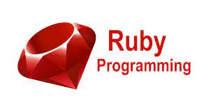

This was a very interesting project where we were required to essentially find an API and be able to ask questions and respond to get information back.
The first question that comes up is 'How Many dog facts do you want?'. This is where you can choose how many you want and the limit is upto 100.
Then a question is asked 'Do you want them in random order?'
And that is a simple Y/N option. The next question followed up is 'Do you want to know more facts?' - Which again is a yes or no answer.
The Gemfile used for scraping is Mechanize. This is how i was able to get the information back from the API.
Some little motivation that keeps me going

food for thought!

Although Ruby language is on a decline, a lot of of start ups use ruby when building thier applications
Ruby is more backend and is interesting to see how it all comes together.
scraping concept for me was a new one and quite interesting.
I would like to make a website for music events in the sydney area using a scraper. My preffrerd language is python, which is a very easy and fun to use language.
The interesting part of this project was to understand how the functions work together to form the repsonses for the information to be displayed.